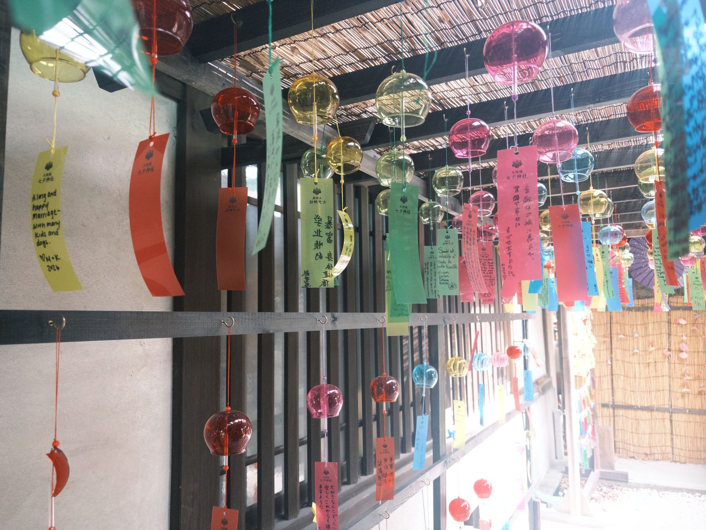
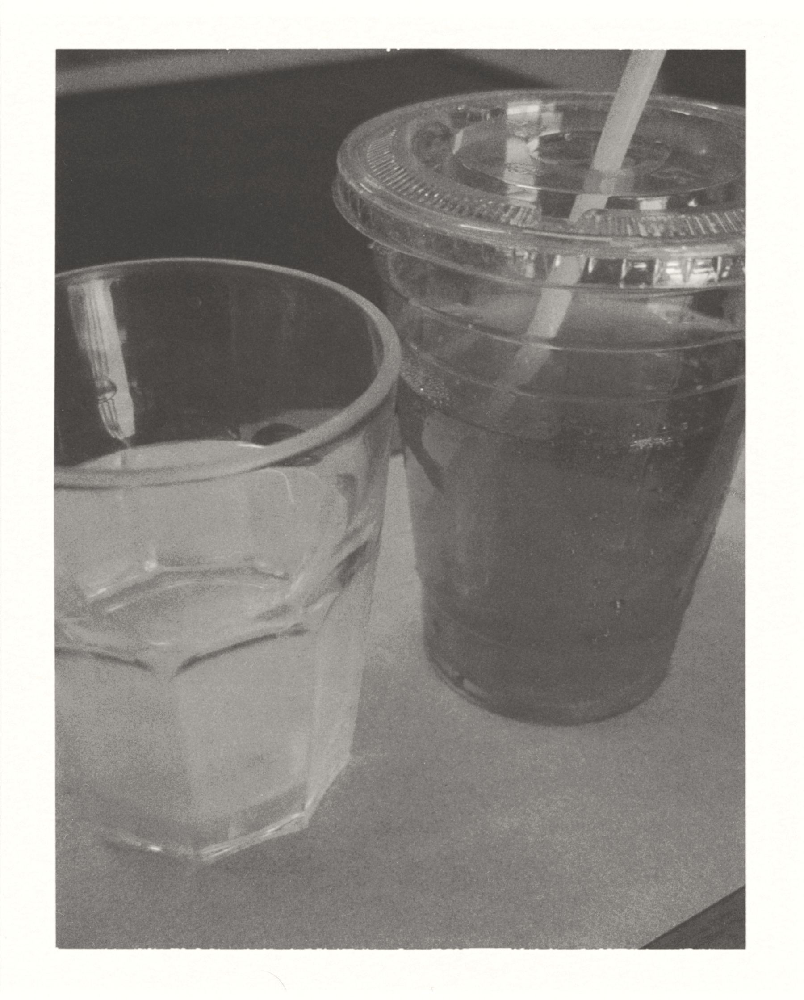
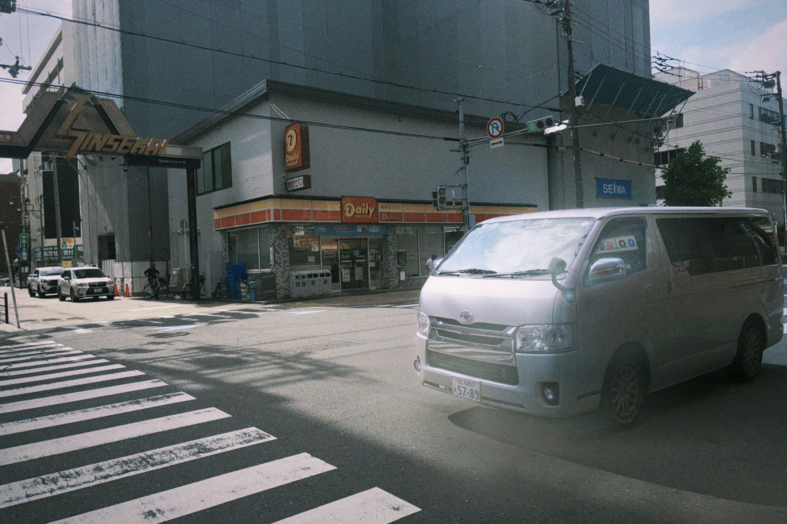
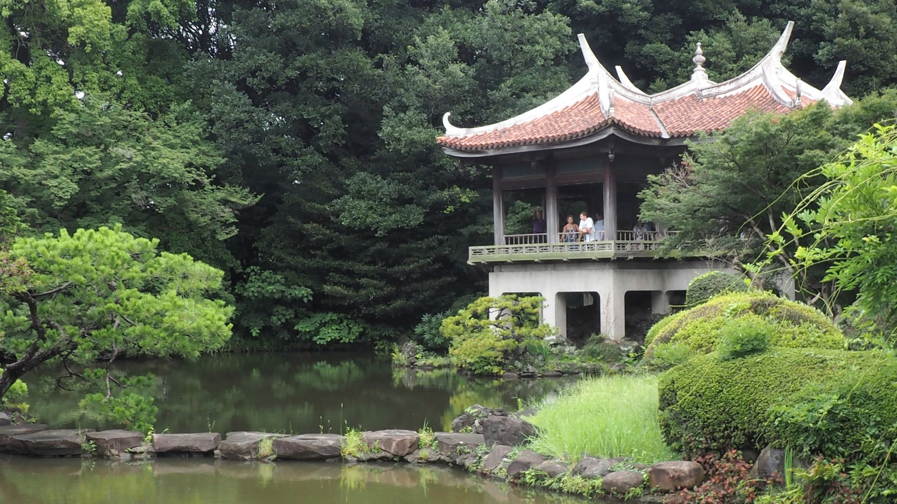

塔Pagoda
JOURNEY — Farther Than the Map
出发的第二天，我开始不再找构图，只是看。
鹿在公园里低头，石庭的沙被耙成一圈一圈，傍晚的堤上有人背对着水坐着。
这些照片没有主题，只有距离——距离是唯一值得带回来的东西。
By the second day I stopped looking for compositions and simply looked. A deer lowering its head in the park; sand raked into circles in a stone garden; someone sitting on the sea wall with their back to the water. These frames have no theme, only distance — and distance is the only thing worth bringing back.
不再找构图的那几天











庙